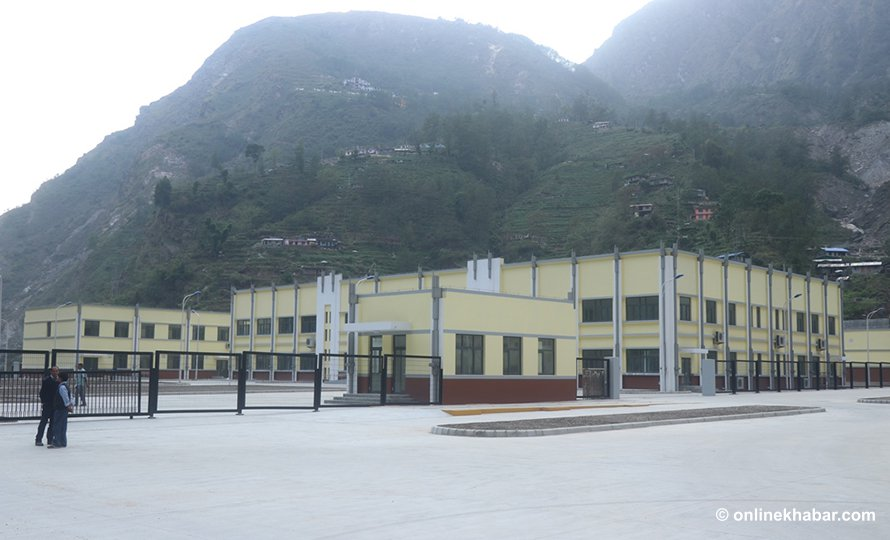

Buisness News

Tatopani customs to resume operation on May 20
The customs point between Nepal and China was out of operation after the area suffered heavy damage during the 2015 Gorkha Earthquake.
The international standard dry port is located 6 km away from Nepal-China border and is spread across 4.2 hectare.
With the border point soon opening, people who had left the area are slowly returning. The infrastructure which was damaged by the earthquake is being built in a safer and better way.
The Department of Customs has also started to send officials to work at the Customs Office at the border point. “We’ll be sending around 9 officials to work there for now,” adds Basnet [ ONLINE KHABAR, May 10th, Friday, 2019 1:00 PM]